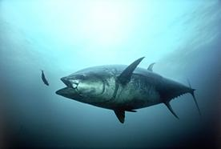

Liikidevahelistel suhetel on oluline mõju liike iseloomustavatele tunnustele. Näiteks kiskjatel on olulised need omadused, mis võimaldavad edukamalt saakloomi püüda. Seetõttu selliste soodsate omaduste esinemissagedus kiskjapopulatsioonis reeglina kasvab.
Järelikult on ka saakloomade puhul eriti eelistatud need tunnused, mis suurendavad saaklooma võimet teda söövat röövlooma vältida. Kuna röövloom-saakloom suhte osapoolte tunnused ei ühildu, on kiskja ja saaklooma interaktsioonid pidevalt arenevad. Huvitaval kombel määrab röövlooma käitumine suures osas saaklooma tunnuseid, ning vastupidi.
Tuunikala kui tüüpiline röövkala. Allikas: http://en.wikipedia.org/wiki/File:Thunnus_thynnus.jpg